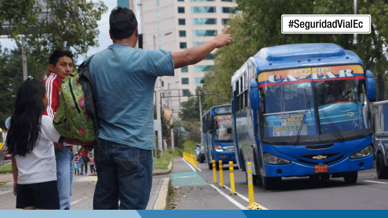
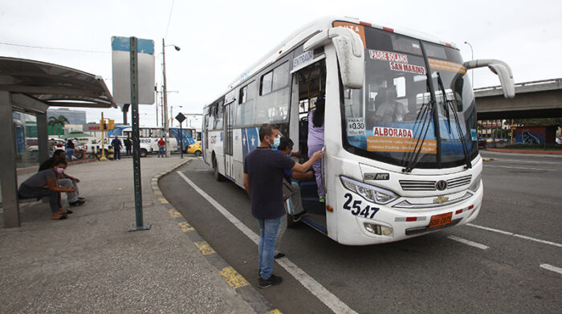

Ofrecemos servicios de alta calidad en lo que es la transportación Publica, con buses actualizado con aire acondicionado asientos comodos para que el usuario tenga una excelente experiencia en el viaje. Cooperativa de Transportes Imca fue fundada el 16 de octubre de 1952 en Montalvo con la propuesta de brindar el mejor servicio de transporte interprovincial del país. Contamos con más de 68 años de experiencia en servicio, seguridad y comodidad. Nuestras 54 unidades doble piso son modernas y equipadas con la mejor tecnología en servicio de viajes terrestres. Nuestra principal ruta es Montalvo-Babahoyo, Babahoyo-La Unión, teniendo oficinas en las cuales es posible adquirir boletos o solicitar información. Es así que durante todos estos años nos hemos caracterizado por ser pioneros en el transporte nacional.
Cooperativa de Transportes Imca conocedora de todas las disposiciones Legales en materia de Seguridad y Salud, considera el fundamental principio de protección de los trabajadores, para lo cual se compromete a mantener un ambiente de trabajo seguro y saludable, cumpliendo y haciendo cumplir las leyes, sobre todo asignando los recursos económicos y humanos para el cumplimiento y mejoramiento continuo de todo el Sistema de Seguridad, Higiene y Salud Ocupacional que se implementará. De tal manera es compromiso promover un sistema de gestión administrativa, técnico y humano, a fin de mantener en control todas las acciones, condiciones y factores de riesgos que se puedan presentar en perjuicio de la institución.
Recoger pasajeros para llevarlos a sus destinos con seguridad
Recoger pasajeros en los Terminales Terrestres del Pais
Testimonio de los Pasajeros
Marilyn Jara: Me parece muy comodo el viaje me gusto sin novedad
Veronica Castro: Me gusto muy fresco el bus por su aire acondicionado
José Chevez: Me gusto muy amable el chofer y oficial supurion ayudar con cualquier duda
- La capital fluvial del Ecuador es territorio de la Cooperativa viaja la ciudad de Babahoyo en la provincia de Los Rios con nosotros.
- Seguridad vial y tiempos de viaje serían criterios priorizados en control a buses en Babahoyo.
- Transportistas realizan plantón en los exteriores del Terminal Terrestre de Babhoyo en rechazo a funcionamiento de radares.
- Estos son los horarios de operación de los buses durante el feriado.
Babahoyo - Montalvo = $1.10 ctvs
Babahoyo - La Unión = $1.25 ctvs
Babahoyo - Pimocha = $0.75 ctvs
Babahoyo - La Carmela = $0.90 ctvs
- Logistica
- Materiales Fisicos
- Materiales Virtuales
- Recursos Humanos
- Recursos Internos
- Recursos Externos
¿Horarios de turnos?
¿Horarios de turnos fines de semana?
¿Horario de turnos en feriado?
Dirección: Montalvo, Ciudad
Teléfono: 0996339231
Correo Electrónico: cooperativa de transporte@gmail.com